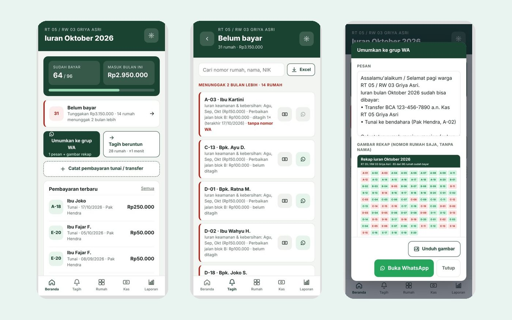
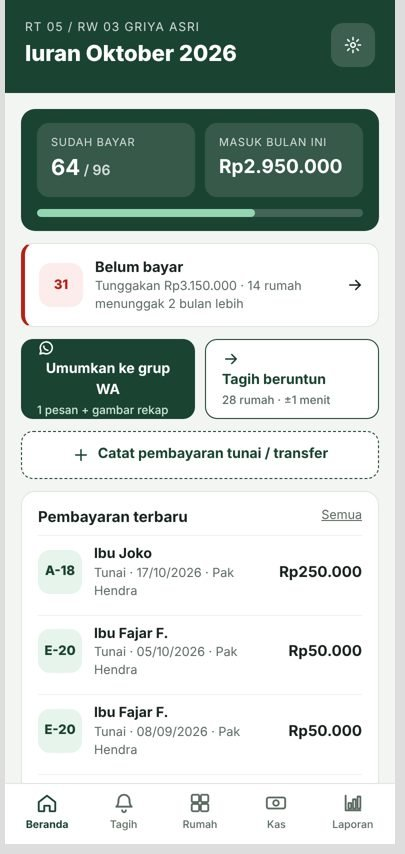
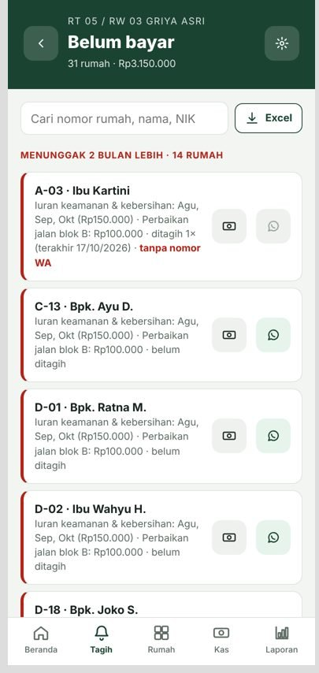
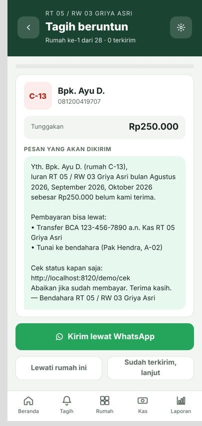
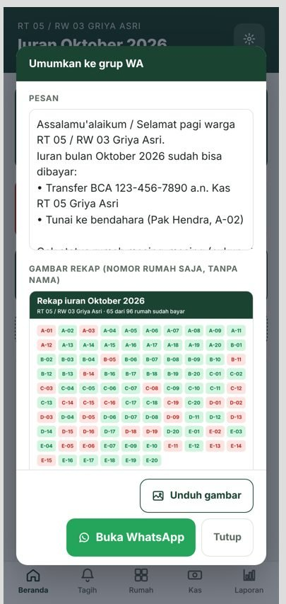
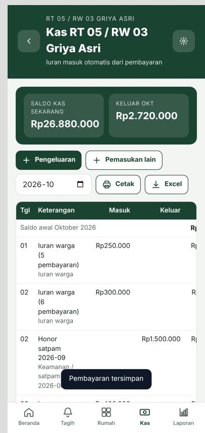
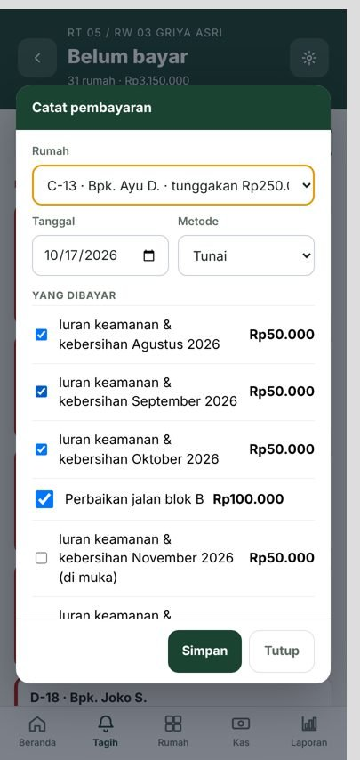

Untuk bendahara RT/RW dan pengurus warga. Berjalan di laptop bendahara tanpa internet, dibuka dari HP lewat Wi-Fi rumah. Tanpa server, tanpa biaya pesan WhatsApp.







Dibuat untuk HP. Bendahara dan pengurus bisa mencatat dari HP masing-masing selama laptop bendahara menyala dan terhubung ke Wi-Fi yang sama.
Tagihan dan pengumuman dikirim dari WhatsApp bendahara sendiri, bukan layanan berbayar.
Data warga tersimpan di laptop bendahara, tidak dikirim ke server mana pun.
Gambar rekap per rumah dan laporan kas tinggal dikirim ke grup WA.
Semua catatan ada di satu folder. Saat bendahara berganti, tinggal pindahkan.
Harga per RT atau RW, terikat nama RT/RW di aplikasi.
| Paket | Cakupan | Per tahun | Selamanya |
|---|---|---|---|
| RT | satu RT, sampai 200 rumah | Rp500.000 | Rp1.250.000 |
| RW | beberapa RT dalam satu RW | Rp1.000.000 | Rp2.500.000 |
Sudah termasuk pemasangan dan pelatihan, langsung (area Bandung) atau jarak jauh. Kas RT/RW bisa membayar bersama, cukup satu lisensi per RT atau RW.
Lewat video call, atau datang langsung untuk area Bandung. Coba sendiri dengan data contoh 100 rumah.
Dipasang di laptop bendahara, langsung atau jarak jauh lewat AnyDesk. Data rumah diimpor dari Excel.
Bendahara dilatih sampai bisa: catat bayar, umumkan ke grup, tagih, laporan kas.
Tanggal 1 umumkan, catat setiap ada yang bayar, tanggal 15 tagih, akhir bulan laporan kas.
Versi online yang cukup dibuka dari HP sedang disiapkan. Daftarkan minat RT/RW Anda lewat WhatsApp, nanti kami kabari begitu tersedia.
Tidak untuk mencatat. Internet hanya dipakai saat mengirim pesan WhatsApp, dari HP atau laptop bendahara seperti biasa.
Tidak. Pesan dikirim dari WhatsApp bendahara sendiri. Aplikasi menyiapkan pesannya, bendahara tinggal menekan kirim.
Di laptop bendahara, tidak dikirim ke server mana pun. Salinan dibuat otomatis setiap hari, dan bisa diarahkan ke folder Google Drive.
Bisa, selama laptop bendahara menyala dan HP terhubung ke Wi-Fi yang sama.
Folder data dipindahkan ke laptop bendahara baru, lalu bendahara baru dibuatkan akun. Catatan lama tetap utuh.
Data tetap bisa dilihat, dicetak, dan dicadangkan. Hanya pencatatan baru yang terkunci sampai diperpanjang.
Kirim pesan, kami jadwalkan demo lewat video call atau datang langsung (area Bandung). Gratis, tanpa kewajiban membeli.
💬 Minta demo lewat WhatsApp